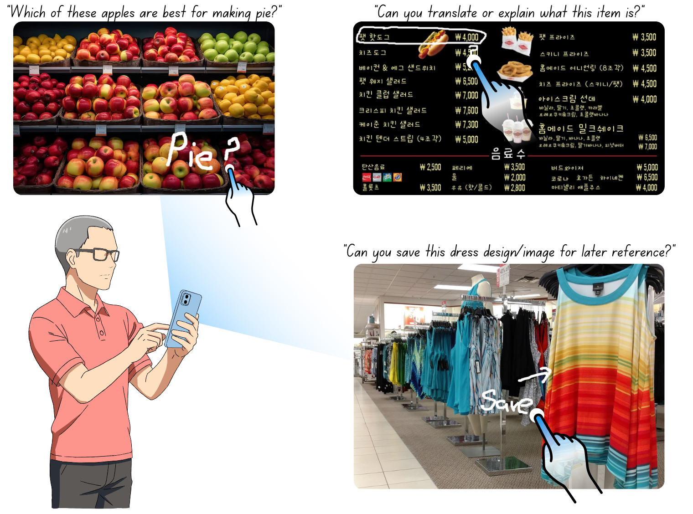
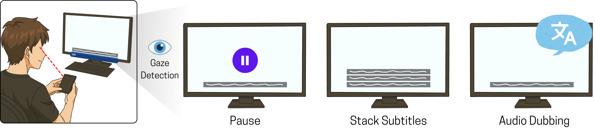
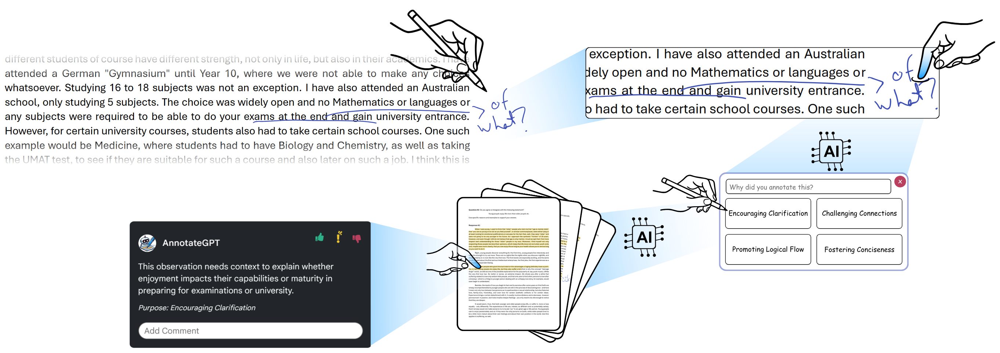
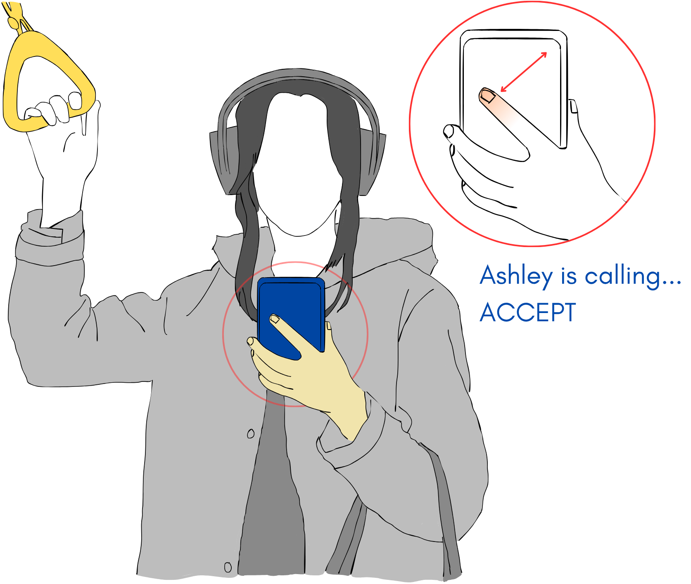
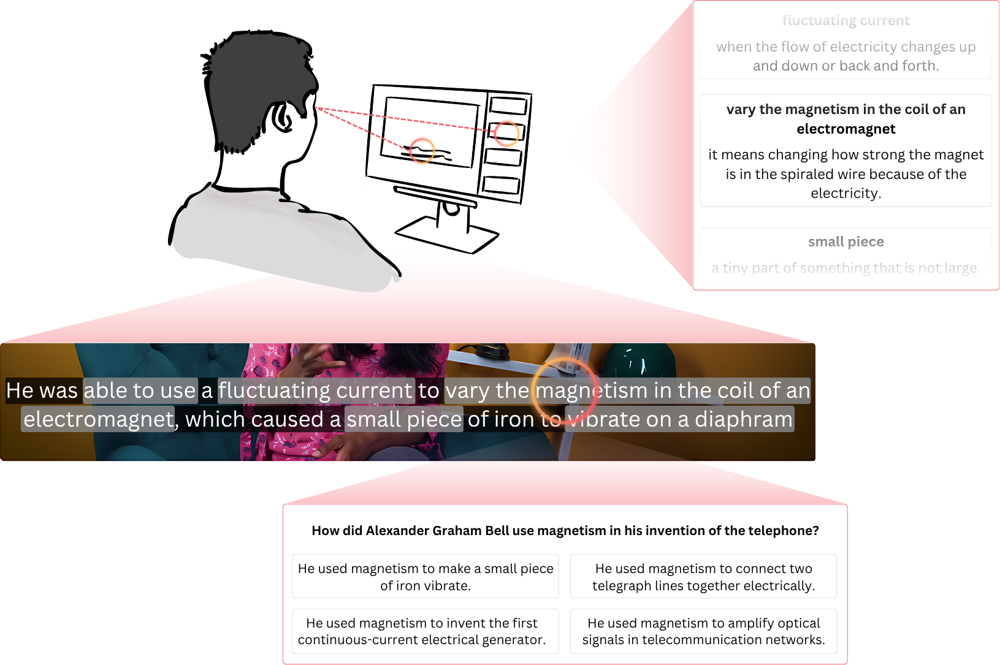
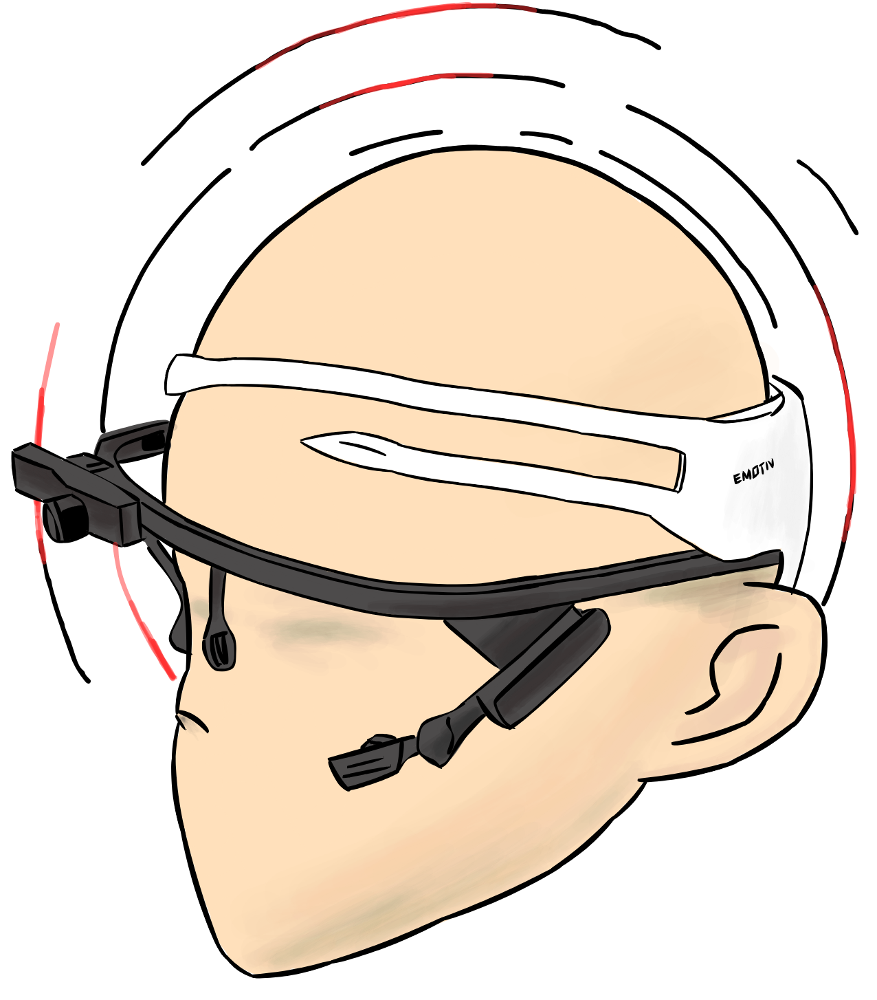
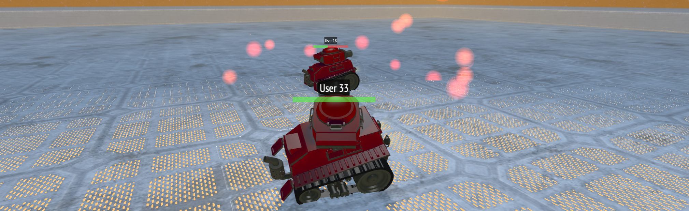
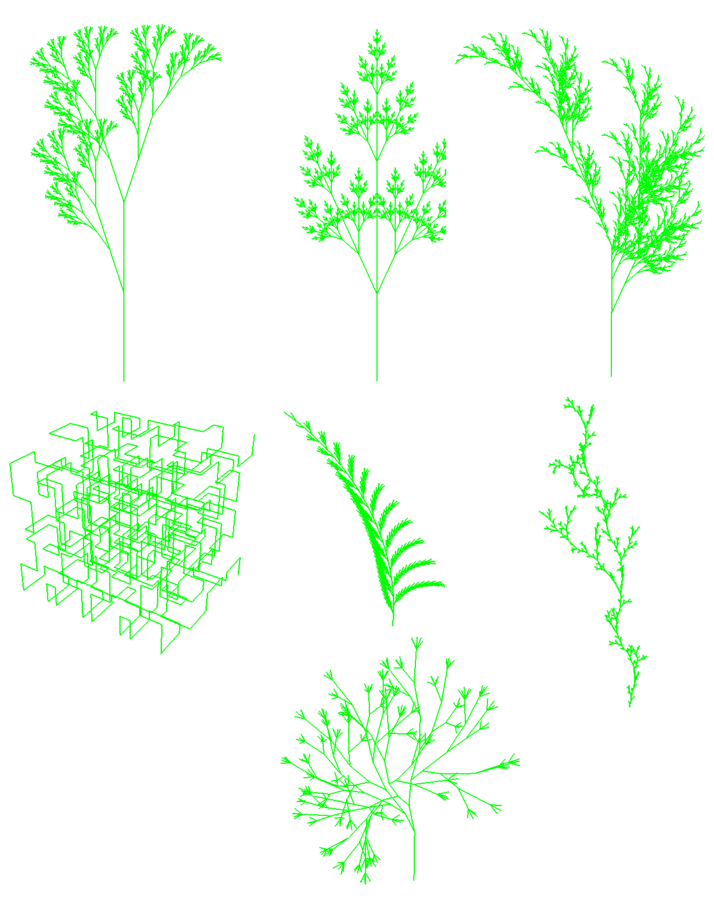
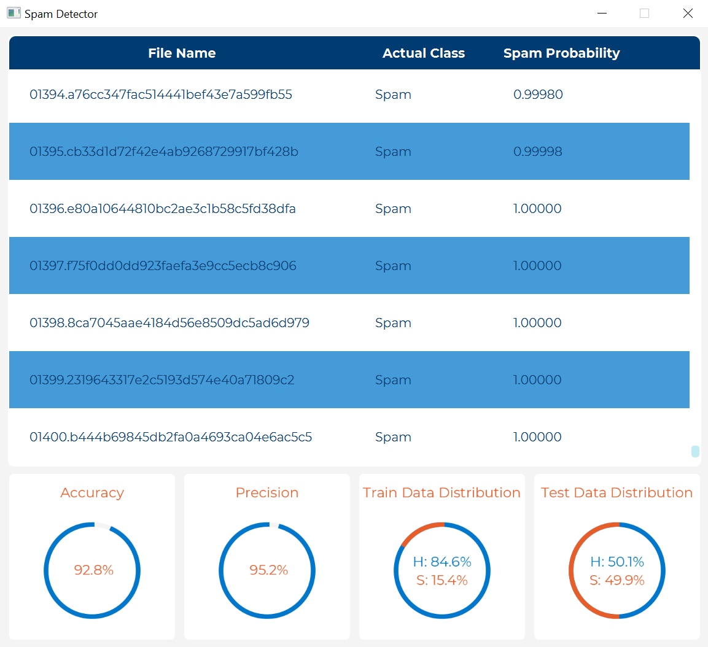
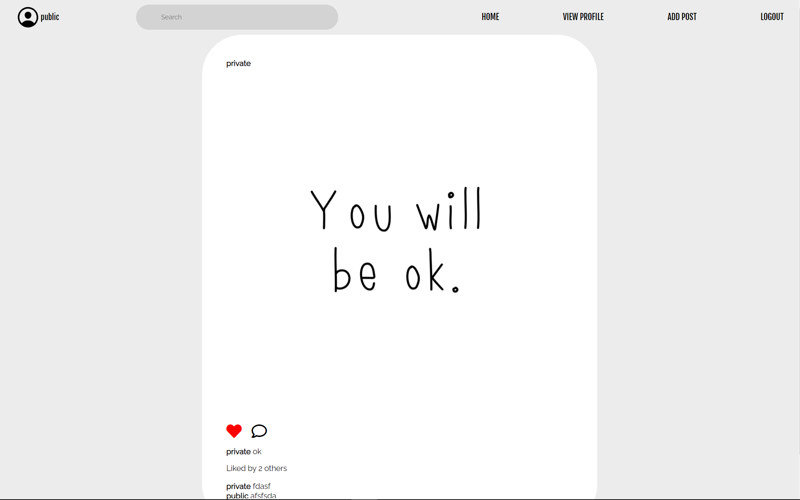

MSc Thesis
Implicit Pen Annotation Assisted by Large Language Models
Benedict Leung
Human–computer interaction
I design new ways to interact with pens, eye trackers and brain–computer interfaces, and lately, with AI.
Nice to meet you
Benedict, if we're being formal. I'm a Master's student in Computer Science at Ontario Tech University.
My research is in human–computer interaction. I focus on novel ways to interact with hardware like pen-based devices, eye trackers, and brain–computer interfaces.
My recent research creates new interactions with large language models, from AI that annotates documents alongside your pen to questions generated from where you look.
I wanted to create something never made before, and use it to help people who couldn't do a specific task.
I was fascinated that you can put your heart and soul into a program and have it do exactly what you envisioned. Your legacy can live on in your programs for generations.
I want my legacy to reach people worldwide, like aiding the blind or advancing neural interfaces.
Someone must take the first step.
These dreams may seem distant. I'll take that step, even if no one else is willing.
My work explores the intersection of sensing hardware, AI, and human experience.

Gaze-Aware Implicit Interventions for Distraction Recovery in Foreign-Language Videos

Designing Human-AI Collaboration in Pen-Based Document Annotation

Exploring the Feasibility of Back-of-Device Swipe Interaction Using Built-In IMU Sensors

Gaze-Driven Question Generation for Personalized Learning from Short Educational Videos

Combining Eye-Tracking and Brain-Computer Interfaces for Context-Aware Hands-Free Camera Interaction

Browser-based tank shooter built with Three.js featuring custom physics and shaders.

Generates L-system fractals using OpenGL.

Email spam classification using heuristic analysis.

Mocks the basic features of Instagram.
Currently looking for new opportunities in HCI research. say hi! →